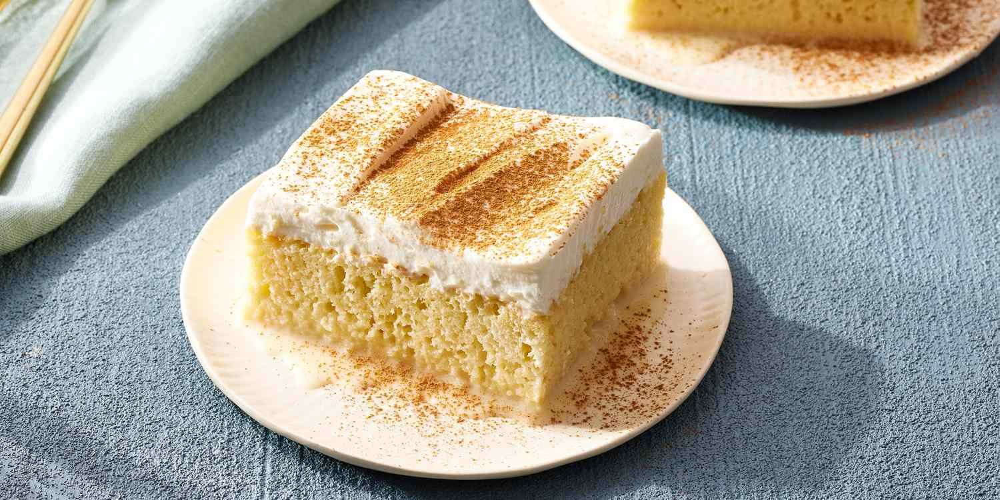

Tres Leches

Description
This delicious tres leches cake has a moist sponge cake layer that soaks up a sweet milk mixture made with three types of milk: whole milk, condensed milk, and evaporated milk. Top the cake with whipped cream to make a decadent Mexican dessert that's excellent for milk lovers!
Ingredients
- 1 1/2 cups all-purpose flour
- 2 teaspoons baking powder
- 3/4 teaspoon kosher salt
- 3 extra-large eggs, at room temperature
- 1 cup plus 5 tablespoons granulated sugar
- 2 teaspoons pure vanilla extract
- 1/2 cup whole milk
- 1 1/4 cups heavy cream
- 1 (12-ounce) can evaporated milk
- 1 (14-ounce) can sweetened condensed milk
- 1/2 teaspoon pure almond extract
- Seeds scraped from 1 vanilla bean
- 8 cups mixed fresh raspberries and sliced strawberries, for serving
- Sifted confectioners' sugar, for dusting
- Make-Ahead Whipped Cream (recipe follows)
Make-Ahead Whipped Cream
- 1 1/2 cups cold heavy cream
- 1/4 cup confectioners' sugar
- 2 tablespoons granulated sugar
- 2 tablespoons creme fraiche
- 1 teaspoon pure vanilla extract
Steps
- Preheat the oven to 350 degrees F. Butter a 9-by-13-by-2-inch baking pan.
- Sift the flour, baking powder, and salt into a small bowl and set aside. Place the eggs, 1 cup of granulated sugar, and the vanilla in the bowl of an electric mixer fitted with the paddle attachment and beat on medium-high speed for 10 minutes (really!) until light yellow and fluffy. Reduce the speed to low and slowly add half the flour mixture, then the milk, and finally the remaining flour mixture. Mix with a rubber spatula to be sure the batter is well mixed. Pour the batter into the prepared pan, smooth the top, and bake for 25 minutes, until the cake springs back when touched lightly in the middle and a cake tester comes out clean. Set aside to cool in the pan for 30 minutes.
- In a 4-cup liquid measuring cup, whisk together the heavy cream, evaporated milk, sweetened condensed milk, almond extract, and vanilla seeds. Using a bamboo skewer, poke holes all over the cooled cake and slowly pour the cream mixture over the cake, allowing it to be absorbed completely before continuing to pour on more of the mixture. Cover the cake with plastic wrap and refrigerate for at least 6 hours.
- To serve, toss the fruit with the 5 tablespoons of granulated sugar. Dust the cake with confectioners' sugar, cut in squares, and place on dessert plates. Surround the cake with the fruit, put a dollop of Make-Ahead Whipped Cream on top, and serve.
- Make-Ahead Whipped Cream: Place the cream, confectioners' sugar, granulated sugar, creme fraiche, and vanilla in the bowl of an electric mixer fitted with the whisk attachment. Beat on high speed, until it forms soft peaks. Serve cold.
Home